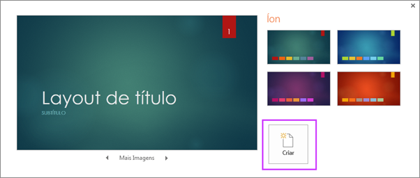
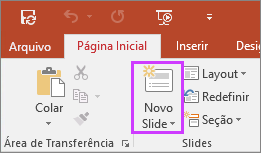
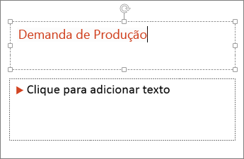
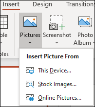
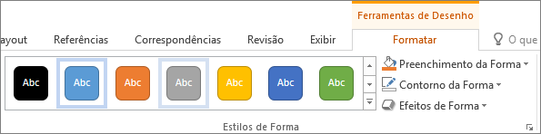
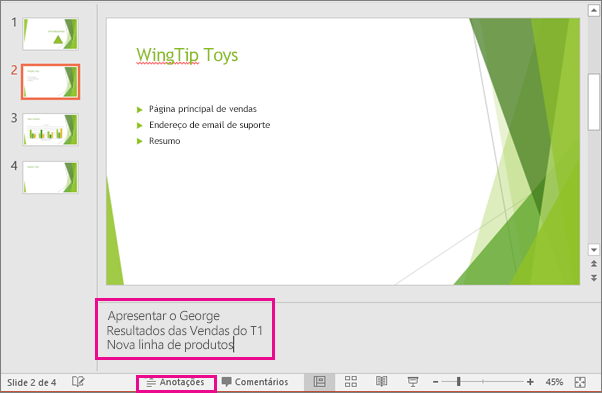
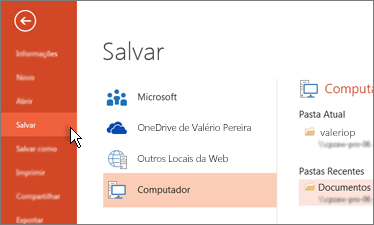
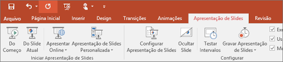

Criar Novo Documento
Abra o Microsoft PowerPoint e clique em "Novo" para começar uma nova apresentação em branco ou escolha um modelo de apresentação pré-definido. Selecione o layout desejado para o seu slide inicial e clique em "Criar" para começar a trabalhar na sua apresentação.
Inserir um novo slide
Na guia Página Inicial, clique na metade inferior do Novo Slide e escolha um layout de slide.
Adicionar texto
Selecione um espaço reservado para texto e comece a digitar.
Formatar seu texto
Em Ferramentas de desenho, escolha Formatar. Para alterar a cor de seu texto, escolha Preenchimento de Texto e escolha uma cor.Para alterar a cor do contorno de seu texto, escolha Contorno do Texto e, em seguida, escolha uma cor.
Para aplicar uma sombra, reflexo, brilho, bisel, rotação 3D, uma transformação, escolha Efeitos de Texto e, em seguida, escolha o efeito desejado.

Adicionar imagens
Na guia Inserir , selecione Imagens e faça um dos seguintes procedimentos:Para inserir uma imagem salva em sua unidade local ou em um servidor interno, escolha Este Dispositivo, navegue pela imagem e escolha Inserir. Para inserir uma imagem da Web, clique em Imagens Onlinee use a caixa de pesquisa para localizar uma imagem. Escolha uma imagem e clique em Inserir. 
Adicionar formas
No guia Inserir, selecione Formas e, em seguida, selecione uma forma no menu que aparece.Na área do slide, clique e arraste para desenhar a forma.
Selecione o guia Formatar ou Formato forma na faixa de opções.
Abra a galeria Estilos de forma para adicionar rapidamente uma cor e estilo (incluindo sombreamento) à forma selecionada.

Adicionar anotações do orador
Para abrir o painel de anotações, na parte inferior da janela, clique em Anotações botão de anotações no PowerPoint.Clique no painel de Anotações abaixo do slide e comece a digitar suas anotações.

Salvar a sua apresentação
Na guia Arquivo, escolha Salvar.Selecionar ou navegar até uma pasta.
Na caixa Nome do arquivo, digite um nome para a apresentação e escolha Salvar.

Fazer sua apresentação
Na guia Apresentação de Slides, siga um destes procedimentos:Para iniciar a apresentação no primeiro slide, no grupo Iniciar Apresentação de Slides, clique em Do Começo.
Se você não estiver no primeiro slide e desejar começar do ponto onde está, clique em Do Slide Atual.
Se você precisar fazer uma apresentação para pessoas que não estão no local onde você está, clique em Apresentar Online para configurar uma apresentação pela Web e escolher uma das seguintes opções:
Transmitir sua apresentação online do PowerPoint para um público remoto
Exibir suas anotações do orador durante a apresentação de slides.
